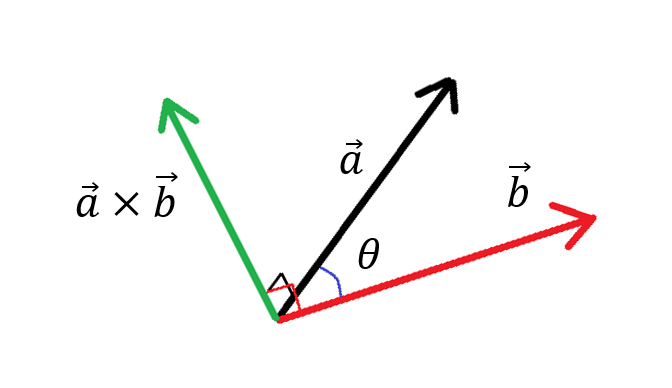
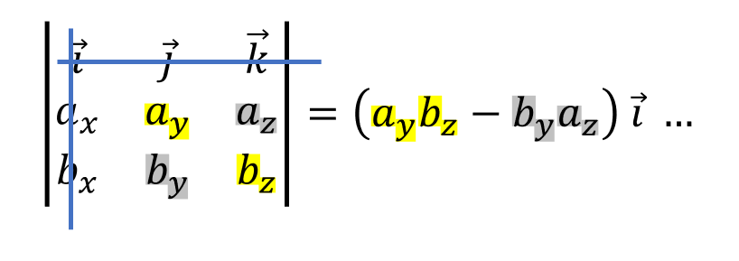
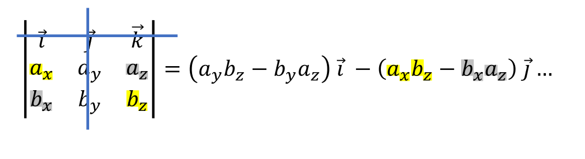
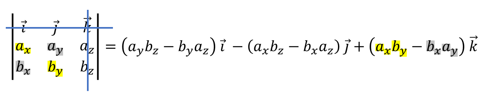
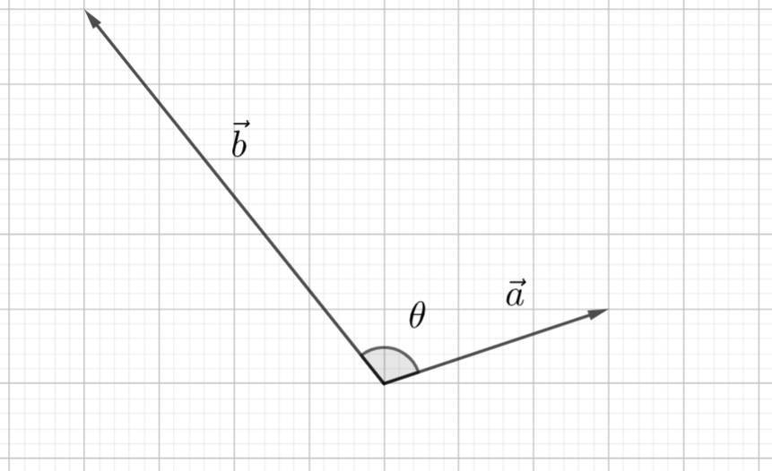

Uusi vektori ristitulosta
Contents
Uusi vektori ristitulosta#
Kolmiulotteisten vektorien ristitulo eli vektoritulo \(\vec{a} \times \vec{b}\) on tärkeä sovelluksissa. Ristitulon avulla voidaan laskea esimerkiksi tilavuuksia ja pinta-aloja. Tässä kappaleessa opetetellaan ristitulon laskeminen.
Ristitulo suoritetaan kahdelle vektorille, joita tässä merkitään \(\vec{a}\) ja \(\vec{b}\). Laskun tulos on uusi vektori \(\vec{a} \times \vec{b}\), joka on kohtisuorassa kumpaakin vektoria vastaan. Vektorien \(\vec{a}\) ja \(\vec{b}\) ei tarvitse olla kohtisuorassa toisiaan vastaan! Kohtisuoruuden voi halutessaan tarkistaa pistetulon avulla: siis \((\vec{a} \times \vec{b})\cdot \vec{a}=0\) ja \((\vec{a}\times \vec{b}) \cdot \vec{b}=0\).

Vektorin \(\vec{a} \times \vec{b}\) suunta siis määräytyy vektoreista \(\vec{a}\) ja \(\vec{b}\). Ristitulovektorin merkitystä voi hahmotella vaikkapa piirtämällä pahvinpalalle kaksi nuolta kuvaamaan vektoreita \(\vec{a}\) ja \(\vec{b}\). Jos pahvinpala ei ole pöydällä, vaan pitelet sitä kädessä vinossa asennossa, vektorit \(\vec{a}\) ja \(\vec{b}\) ovat kolmiulotteisia vektoreita. Ristitulovektori löytyy tökkäämällä pahvinpalan läpi lyijykynä siten, että se on kohtisuorassa pahvia vastaan. Kynä on tällöin kohtisuorassa kumpaakin vektoria \(\vec{a}\) ja \(\vec{b}\) vastaan. Lyijykynällä voitaisiin itse asiassa kuvailla jopa koko pahvinpalan muodostaman tason sijainti ja asento (tämä täydentyy näihin materiaaleihin myöhemmin).
Ristitulovektorin pituus riippuu vektorien \(\vec{a}\) ja \(\vec{b}\) pituuksista ja myös näiden vektorien välisestä kulmasta \(\theta\). Riippuvuus kulmasta on erilainen kuin pistetulossa: ristitulovektori on pisin mahdollinen silloin, kun sen laskussa käytetyt vektorit ovat kohtisuorassa toisiaan vastaan. Laskukaava pituuden ja kulman väliselle yhteydelle johdetaan myöhemmin tällä sivulla.
Ristitulon laskeminen#
Ristitulolle on olemassa laskukaava: jos \(\vec{a}=a_x \vec{i} + a_y \vec{j} + a_z \vec{k}\) ja \(\vec{b}=b_x \vec{i} + b_y \vec{j} + b_z \vec{k}\), niin ristitulo on \(\vec{a} \times \vec{b}=(a_y b_z-a_z b_y) \vec{i}-(a_x b_z-a_z b_x) \vec{j}+(a_x b_y-a_y b_x) \vec{k}\).
Kaavaa ei kuitenkaan kannata opetella, sillä laskeminen onnistuu käyttämällä apuna ns. kolmirivistä determinanttia. Sama laskumenetelmä toistuu myöhemmin matriisilaskennassa.
Aluksi kirjoitetaan ruudukkoon ylimmäksi riviksi yksikkövektorit, 2. riviksi vektorin \(\vec{a}\) kertoimet ja 3. riviksi vektorin \(\vec{b}\) kertoimet. Ruudukon ympärille tulee itseisarvomerkit kuvaamaan sitä, että kyseessä on determinantin laskeminen. (Determinantin merkitystä ei vielä tässä vaiheessa tarvitse tietää.)
Kun ruudukko on muodostettu, peitetään 1. rivi ja 1. sarake. Kerrotaan jäljelle jäävät luvut ristikkäin. Vähennetään 1. lukuparin (vasen ylä- ja oikea alakulma) tulosta 2. lukuparin (vasen ala- ja oikea yläkulma) tulo. Kerrotaan tulos yksikkövektorilla \(\vec{i}\).

Seuraavaksi pidetään yhä 1. rivi peitettynä ja peitetään vuorostaan 2. sarake. Kerrotaan jäljelle jäävät luvut ristikkäin ja vähennetään luvut toisistaan kuten edellä. Kerrotaan yksikkövektorilla \(\vec{j}\). Tämän laskun tulos vähennetään edellisen laskun tuloksesta.

Lopuksi peitetään 1. rivi ja 3. sarake. Kerrotaan jäljelle jäävät luvut ristikkäin ja vähennetään luvut toisistaan kuten edellä. Kerrotaan yksikkövektorilla \(\vec{k}\). Lisätään laskun tulos edellisen vaiheen tuloksen perään.

Tulokseksi saatiin edellä esitetty laskukaava. Kertoimeksi ristikkäisten tulojen erotukselle tulee siis aina se yksikkövektori, joka jää peitetyksi sekä vaaka- että pystysuunnassa. Kertolaskujen tulos otetaan laskuun vuorotellen plus-, miinus- ja plusmerkkisenä (tähän palataan vielä matriisien determinantin yhteydessä).
Jos vektorissa on vain kaksi komponenttia, niin kolmannen komponentin kertoimeksi asetetaan 0, siis esimerkiksi vektoria \(2 \vec{i} + 3 \vec{j}\) voi käyttää ristituloa vaativissa laskuissa, kun sen esittää muodossa \(2 \vec{i} + 3 \vec{j} + 0 \vec{k}\).
Ristitulon laskujärjestys ei ole vaihdannainen, siis yleisesti \(\vec{a} \times \vec{b} \neq \vec{b} \times \vec{a}\). Kuitenkin tässä tapauksessa tulos on muuten sama, mutta kaikki kantavektorien kertoimet muuttuvat vastakkaiseksi, eli \(\vec{a} \times \vec{b} = - (\vec{b} \times \vec{a})\). Ristituloon liittyy monenlaisia laskusääntöjä, joista osa poikkeaa reaaliluvuilla tutuista laskusäännöistä (Wikipedia).
WolframAlphalla ristitulo lasketaan kertomerkillä *, siis esimerkiksi vektorien \(\vec{a}=3 \vec{i}+2 \vec{j}-\vec{k}\) ja \(\vec{b}=-5\vec{i}+3\vec{j}+\vec{k}\) ristitulo saadaan komennolla [3,2,-1]*[-5,3,1]tai komennolla cross([3,2,-1],[-5,3,1]).
Esimerkki
Laske vektorien \(\vec{a}=\vec{i}-\vec{j}+\vec{k}\) ja \(\vec{b}=\vec{j}-2\vec{k}\) ristitulo determinanttia hyödyntämällä.
Ratkaisu
Laskeminen taulukon avulla:

\(\vec{a}\times \vec{b}=[(-1)(-2)-(1\cdot 1)] \vec{i}-[1\cdot (-2)-1\cdot 0]\vec{j}+[1\cdot 1-(-1\cdot 0)] \vec{k} \)
\( = \vec{i}+2\vec{j}+\vec{k}\)
Esimerkki
Laske ristitulo \(\vec{a}\times \vec{b}\) käsin. Tarkista tietokoneella. Lisäksi tutki vastauksen oikeellisuutta laskemalla \((\vec{a}\times \vec{b})\cdot \vec{a}\).
a) \(\vec{a}=4\vec{i}-\vec{j}+5\vec{k}, \vec{b}=\vec{i}-3\vec{j}-4\vec{k}\)
b) \(\vec{a}=\vec{i}+2\vec{j}, \vec{b}=2\vec{i}+\vec{j}+\vec{k}\)
Ratkaisu
a) \(\vec{a}\times\vec{b} = \begin{vmatrix} \vec{i} & \vec{j} & \vec{k} \\ 4 & -1 & 5 \\ 1 & -3 & -4 \\ \end{vmatrix}\)
\(=[(-1)\cdot (-4)-5\cdot (-3)] \vec{i}-[4\cdot (-4)-5\cdot 1]\vec{j}+[4\cdot(-3)-(-1)\cdot 1] \vec{k}\)
\(=(4+15) \vec{i} -(-16-5) \vec{j} + (-12+1) \vec{k}=19 \vec{i}+21 \vec{j}-11 \vec{k}\).
WolframAlpha-komento cross([4,-1,5],[1,-3,-4]) antaa tuloksen [19,21,-11].
Lisäksi voidaan laskea \((\vec{a}\times \vec{b})\cdot \vec{a}=19\cdot 4+21 \cdot (-1)-11\cdot 5=0\).
b) \(\vec{a}\times\vec{b} = \begin{vmatrix} \vec{i} & \vec{j} & \vec{k} \\ 1 & 2 & 0 \\ 2 & 1 & 1 \\ \end{vmatrix}\)
\(=(2\cdot 1-0\cdot 1) \vec{i}-(1\cdot 1-0\cdot 2) \vec{j} + (1\cdot 1-2 \cdot 2) \vec{k}\)
\(= 2 \vec{i}-\vec{j}-3\vec{k}\).
WolframAlpha-komento cross([1,2,0],[2,1,1]) antaa tuloksen [2,-1,-3] ja lisäksi voidaan laskea \((\vec{a}\times \vec{b})\cdot \vec{a}=1\cdot 2+2\cdot (-1)+0\cdot (-3)=0\).
Ristitulovektorin pituus#
Kun ristitulovektori on laskettu edellä annetun reseptin mukaan, voidaan sen pituus tietysti laskea kuten vektoreille yleensäkin. On kuitenkin olemassa toinenkin laskukaava ristitulovektorin pituudelle:
\(|\vec{a} \times \vec{b}| = |\vec{a}||\vec{b}| \sin{\theta}\)
Laskukaava on hyödyllinen geometriassa. Sovelluksia tälle kaavalla on esitetty seuraavassa luvussa. Voit halutessasi lukea laskukaavan pitkähkön perustelun alta.
Perustelu
Kirjoitetaan lauseke ristitulovektorin pituudelle käyttämällä normaalia vektorin pituuden määritelmää:
\(|\vec{a}\times\vec{b|}=\sqrt{\left(a_yb_z-b_ya_z\right)^2+\left(a_xb_z-b_xa_z\right)^2+\left(a_xb_y-b_xa_y\right)^2}\)
Pitkän neliöjuurilaskun välttämiseksi lasketaan ensin \(|\vec{a}\times{\vec{b|}}^2\)
\(|\vec{a}\times{\vec{b|}}^2=\left(a_yb_z-b_ya_z\right)^2+\left(a_xb_z-b_xa_z\right)^2+\left(a_xb_y-b_xa_y\right)^2\)
Avataan sulut potenssilaskuista binomikaavoja hyödyntämällä:
\(\begin{equation}\begin{split} |\vec{a}\times{\vec{b|}}^2 & =a_y^2b_z^2-2a_yb_zb_ya_z+b_y^2a_z^2 \\ & + a_x^2b_z^2-2a_xb_zb_xa_z+b_x^2a_z^2\\ & + a_x^2b_y^2-2a_xb_yb_xa_y+b_x^2a_y^2\end{split}\end{equation}\)
Järjestetään edellisen yhtälön oikean puolen termejä uudelleen (vapaaehtoinen harjoitustehtävä!):
\(|\vec{a}\times{\vec{b|}}^2=\left(a_x^2+a_y^2+a_z^2\right)\left(b_x^2+b_y^2+b_z^2\right)-\left(a_xb_x+a_yb_y+a_zb_z\right)^2\)
Yhtälön oikealta puolelta löytyvät vektorien \(\vec{a}\) ja \(\vec{b}\) pituudet ja pistetulo:
\(|\vec{a}\times{\vec{b|}}^2=\left|\vec{a}\right|^2\ \left|\vec{b}\right|^2-\left(\vec{a}\cdot\vec{b}\right)^2\)
Sijoitetaan yhtälöön pistetulon toinen määritelmä:
\(\vec{a}\cdot\vec{b}=\left|\vec{a}\right|\left|\vec{b}\right|\cos{\theta}\)
Suoritetaan sulkulausekkeen potenssiinkorotus ja sievennetään yhtälön oikeaa puolta ottamalla \(\left|\vec{a}\right|^2\ \left|\vec{b}\right|^2\) yhteiseksi tekijäksi:
\(|\vec{a}\times{\vec{b|}}^2=\left|\vec{a}\right|^2\ \left|\vec{b}\right|^2-\left(\left|\vec{a}\right|^2\ \left|\vec{b}\right|^2\cos^2{\theta}\right)\)
\(|\vec{a}\times{\vec{b|}}^2=\left|\vec{a}\right|^2\ \left|\vec{b}\right|^2\left(1-\cos^2{\theta}\right)\)
Yksikköympyrän ja Pythagoraan lauseen perusteella \(1-\cos^2{\theta\ }=\sin^2{\theta}\), joten
\(|\vec{a}\times{\vec{b|}}^2=\left|\vec{a}\right|^2\left|\vec{b}\right|^2\sin^2{\theta}\)
ja edelleen
\(\left|\vec{a}\times\vec{b}\right|=\left|\vec{a}\right|\left|\vec{b}\right|\sin{\theta}\).
Tässä on oletettu, että vektorien välinen kulma on 0 ja 180 asteen välissä, jolloin kulman sini on positiivinen.
Esimerkki
Laske vektorien \(\vec{a}=\vec{i}+2\vec{j}+\vec{k}\) ja \(\vec{b}=3\vec{i}+4\vec{j}+5\vec{k}\) välinen kulma ristitulon avulla.
Ratkaisu
Koska \(|\vec{a} \times \vec{b}| = |\vec{a}||\vec{b}| \sin{\theta}\), niin
\(\sin{\theta}= \frac{|\vec{a} \times \vec{b}|} {|\vec{a}||\vec{b}|}\).
Tarvittavan ristitulon voi laskea esimerkiksi tietokoneella, tulokseksi saadaan \(\vec{a}\times \vec{b}=6\vec{i}-2\vec{j}-2\vec{k}\). Tämän vektorin pituus on \(|\vec{a}\times \vec{b}|=\sqrt{6^2+2^2+2^2}=\sqrt{44}=2\sqrt{11}\). Ristitulovektorin ja sen pituuden saa myös kerralla samalla komennolla: norm([1,2,1]*[3,4,5]).
Lisäksi tarvitaan vektorien pituudet: \(|\vec{a}|=\sqrt{1^2+2^2+1^2}=\sqrt{6}\) ja \(|\vec{b}|=\sqrt{3^2+4^2+5^2}=\sqrt{50}\).
Siis \(\sin{\theta}= \frac{2\sqrt{11}} {\sqrt{6}\sqrt{50}}\) ja \(\theta = \arcsin{\frac{2\sqrt{11}} {\sqrt{6}\sqrt{50}}} \approx 22.52^{\circ}\).
Esimerkki
Laske vektorien \(\vec{a}=3\vec{i}+\vec{j}\) ja \(\vec{b}=-4\vec{i}+5\vec{j}\) välinen kulma ristitulon avulla. Kyseiset tason vektorit on esitetty kuvassa.

Ratkaisu
Lasketaan ristitulo vaikkapa kolmirivisen determinantin avulla. Taulukkoon pitää lisätä kolmas kantavektori \(\vec{k}\) ja sen kertoimeksi nolla.
\(\begin{equation}\begin{split} \vec{a}\times\vec{b} & = \begin{vmatrix} \vec{i} & \vec{j} & \vec{k} \\ 3 & 1 & 0 \\ -4 & 5 & 0 \\ \end{vmatrix} \\ &=(1\cdot 0-0\cdot 5) \vec{i} \\ & -[3\cdot 0-0\cdot (-4)] \vec{j} \\& + [3\cdot 5-1 \cdot (-4)] \vec{k} \\ &= 19 \vec{k} \end{split}\end{equation}\)
Tulokseksi tuli vektori, jonka ainoa nollasta poikkeava kantavektori on juuri se kantavektori, jota ei esiintynyt kummassakaan ristitulossa mukana olleessa vektorissa. Kyseisen vektorin pituus on tämän kantavektorin kertoimen itseisarvo eli tässä tapauksessa sama kuin kerroin, siis \(|\vec{a}\times \vec{b}|=19\).
Muut tarvittavat vektorien pituudet ovat \(|\vec{a}|=\sqrt{3^2+1^2}=\sqrt{10}\) ja \(|\vec{b}|=\sqrt{4^2+5^2}=\sqrt{41}\).
Kulmaksi saadaan siis
\(\theta = \arcsin{\frac{19} {\sqrt{10}\sqrt{41}}} \approx 69.8^{\circ}\).
Kuvan perusteella näyttäisi siltä, että kulman tulisi olla enemmän kuin 90 astetta. Laskimmeko väärin? Tarvittavat luvut laskukaavaan on kyllä laskettu oikein. Trigonometrilla funktioilla on kuitenkin sellainen ominaisuus, että useammalla kuin yhdellä kulmalla on sama sinin arvo. Tässä tapauksessa laskin on antanut vastauksesi pienemmän kulman, jolla on laskukaavan mukainen sini. Toinen kulma, jolla on yhtä suuri sini, saadaan laskemalla \(180^{\circ}-69.8^{\circ}=110.2^{\circ}\). Tässä tapauksessa tämä on oikea vastaus.
Kulman voi toki laskea myös pistetulon avulla, jolloin laskussa käytetään kulman kosinia eikä siniä. Kosini on kulmalle yksikäsitteinen silloin, kun kulman suuruus on nollan ja 90 asteen välillä.